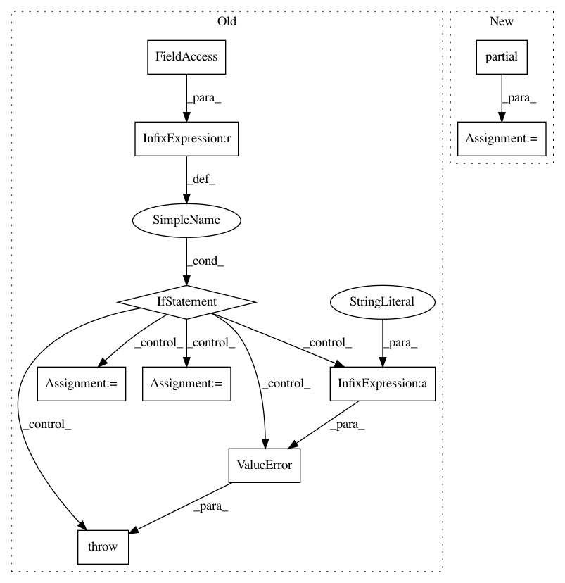

a3da3ef19a391b8f82901004d49f5d20b637d3dc,nilearn/decoding/space_net.py,_BaseCV,fit,#_BaseCV#Any#Any#,458
Before Change
assert self.solver is not None
// sanitize path_scores_func
if self.path_scores_func is None:
raise ValueError(
"Class "%s" doesn"t have a `path_scores_func` attribute!" % (
self.__class__.__name__))
X = np.array(X)
y = np.array(y).ravel()
n_samples, _ = X.shape
self.__class__.__name__.endswith("CV")
solver = self.solver
path_scores_func = self.path_scores_func
special_kwargs = {}
if hasattr(self, "debias"):
special_kwargs["debias"] = getattr(self, "debias")
After Change
if self.classif:
solver = partial(tvl1_solver, loss="logistic")
else:
solver = partial(tvl1_solver, loss="mse")
special_kwargs = {}
if hasattr(self, "debias"):
special_kwargs["debias"] = getattr(self, "debias")
In pattern: SUPERPATTERN
Frequency: 3
Non-data size: 10
Instances
Project Name: nilearn/nilearn
Commit Name: a3da3ef19a391b8f82901004d49f5d20b637d3dc
Time: 2015-07-28
Author: elvis.dohmatob@inria.fr
File Name: nilearn/decoding/space_net.py
Class Name: _BaseCV
Method Name: fit
Project Name: tensorflow/tpu
Commit Name: f7f6ccdbb2f8299f910dee548738a8a38cd089a5
Time: 2019-02-07
Author: pengchong@google.com
File Name: models/experimental/dcgan/dcgan_main.py
Class Name:
Method Name: main
Project Name: nilearn/nilearn
Commit Name: 31967a2f696ff5bd89e203ca9006e5df487f784b
Time: 2015-07-28
Author: elvis.dohmatob@inria.fr
File Name: nilearn/decoding/space_net.py
Class Name: _BaseCV
Method Name: fit